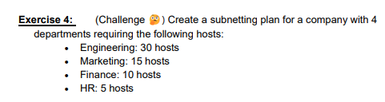
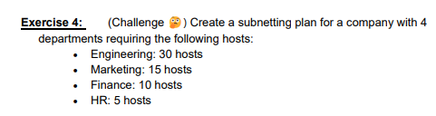

The Link Layer (also known as the Network Access Layer) is responsible for transferring data physically between connected network nodes.
This layer ensures proper framing and link access by encapsulating network layer data into frames for transmission. Additionally, it handles error detection and correction through methods like parity checking, Internet checksum, and Cyclic Redundancy Check (CRC) to identify and fix errors. Flow control regulates data transfer pacing, while half and full duplex modes determine whether both nodes can transmit at the same time.
TDMA and FDMA divides the channels into time slots or frequency bands respectively. Random access protocols are used to allow nodes to transmit without pre-allocated slots, detecting and handling collisions dynamically.
Switches play a key role in forwarding frames based on MAC addresses, reducing collision in domains and improving network efficiency. Addressing with LANs relies on MAC addresses, which serve as device identification, and ARP, which maps IP address to MAC addresses for packet delivery.
 

All private IP addresses start with 10, 172 or 192, although some public IP addresses may also begin with 172 and 192.
Using seminar week 2, I have identified that the IP address of the university website (gold.ac.uk) is 159.100.136.66. This means that the universities IP address is public.
Theres 2^16 - 2 reliable hosts
We -2 as we need to consider the broadcast and network address.
Engineering :
Starting from 172.16.0.1, you can allocate 30 hosts to the engeneering department.
2^5 = 32
32 - 5 = 27
So the subnet masking would be 172.16.0.1/27
It would be allocated 172.16.0.1 - 172.16.0.30
We leave 17.16.0.0 and 17.16.0.31 for the network address and broadcast address. Therefore the next department will need to start from 172.16.0.32
This department also needs to leave one at the start and end of its usable IP range, as it needs to reserve space for a broadcast address and a network address. Therefore the next departments usable host range will start from 172.16.0.32.
Marketing:
Starting from 172.16.0.33, you can allocate 15 hosts to the marketing department.
2^4 = 16
16-2 = 14
This means there is not enough usable hosts as 14 is smaller than 15.
2^5 = 32
32 - 5 = 27
So the subnet masking would be 172.16.0.32/27
It would be allocated 172.16.0.32 - 172.16.0.62
Finance:
Starting from 172.16.0.65, we can allocate 10 hosts.
2^4 = 16
16-2 =14
32 - 4 = 28
So the subnet masking would be 17.16.0.64/28
It would be allocated 172.16.0.65 - 173.16.0.78
HR:
Starting from 172.16.0.81, we can allocate 5 hosts.
2^3 = 8
8-2 = 6
32-3= 29
So the subnet masking would be 172.16.0.80/29
It would be allocated 172.16.0.91 - 172.16.0.86